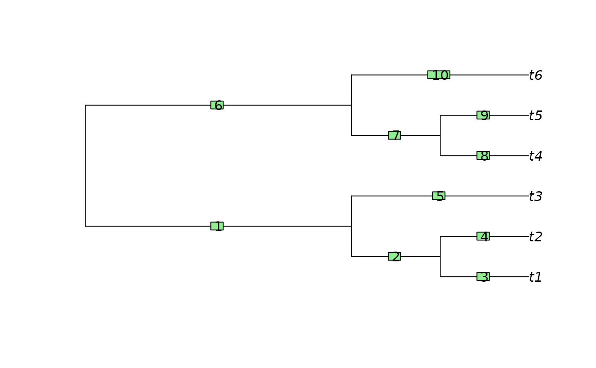

Ancestral edge
AncestorEdge(edge, parent, child)AncestorEdge returns a logical vector identifying whether each edge
is the immediate ancestor of the given edge.
Other tree navigation:
CladeSizes(),
DescendantEdges(),
EdgeAncestry(),
EdgeDistances(),
ListAncestors(),
MRCA(),
NDescendants(),
NodeDepth(),
NodeOrder(),
NonDuplicateRoot(),
RootNode()
tree <- BalancedTree(6)
parent <- tree$edge[, 1]
child <- tree$edge[, 2]
plot(tree)
ape::edgelabels()

AncestorEdge(5, parent, child)
#> [1] TRUE FALSE FALSE FALSE FALSE FALSE FALSE FALSE FALSE FALSE
which(AncestorEdge(5, parent, child))
#> [1] 1